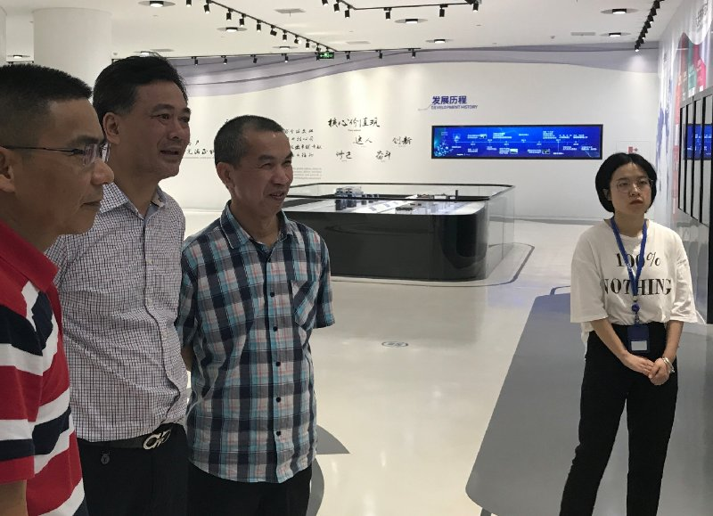

相逢的人会再相逢
2019-06
 宁德时代。2019-05
 又一年春夏之交，春意带着些许萧瑟。
又一年春夏之交，春意带着些许萧瑟。
2018-05
教授带学生实习在福清，五月海风拂面。2018-03
 武夷茶馆，一杯香茗、一份情谊、一段记忆。
武夷茶馆，一杯香茗、一份情谊、一段记忆。
2018-03
 南平聚会酒，聊发少年狂。
南平聚会酒，聊发少年狂。
2017-10
 福州茶馆，茶香飘溢惹人醉。
福州茶馆，茶香飘溢惹人醉。
2017-09
 泉州石狮永宁卫，不醉不归啊。
泉州石狮永宁卫，不醉不归啊。
2017-02
 都是农艺师，在仙游。
都是农艺师，在仙游。
2016-10
 俩主席在泉州德化瓷都。
俩主席在泉州德化瓷都。
2016-10
 党代会，从一个胜利走向另一个胜利
党代会，从一个胜利走向另一个胜利
2016-07
 枫叶国，横跨太平洋的相逢，洋溢喜悦。
枫叶国，横跨太平洋的相逢，洋溢喜悦。
2016-05
 资深女同学，姹紫嫣红。
资深女同学，姹紫嫣红。
2016-03
武夷学院，应该是祝贺的酒。2016-02
 又一年农场踏青，桃花依旧，男同学人到中年了。
又一年农场踏青，桃花依旧，男同学人到中年了。
2015-12
 协会年会，致战斗在农业第一线同学。
协会年会，致战斗在农业第一线同学。
2015-08
 邓平回国聚会，热烈都写在脸上。
邓平回国聚会，热烈都写在脸上。
2015-07
 平潭“失联”同学回来了。
平潭“失联”同学回来了。
2015-03
 貌似二战“三巨头”福州会议？
貌似二战“三巨头”福州会议？
2015-02
教授春节回三明，低调沉稳。2014-11
与院士老师一起，无拘无束。2014-08
地方政府与母校专家，强强联合。2013
 福州的又一次胜利聚餐。
福州的又一次胜利聚餐。
2012-08
厦门同学与黄老师合影。2012-08
 泉州湖美，哥仨好。
泉州湖美，哥仨好。
2012-02
农场踏青之旅，人面桃花相映红。2011
 红土地同学欢迎劳模。
红土地同学欢迎劳模。
2008
 护“花”使者。
护“花”使者。
2006
 福州之家，在谁家呢？
福州之家，在谁家呢？
2005
 跨洋又跨国，相聚弥足珍贵。
跨洋又跨国，相聚弥足珍贵。
2004
豪客来了，厦门同学接待教授。2003-12
福州的一次胜利聚餐。2003-11
青山为背景，凸显风华正茂。2003-07
 宁德的三都澳吗？
宁德的三都澳吗？
2002
 泉州清源山留影，“老子”见证。
泉州清源山留影，“老子”见证。
1997
 即将远行，总是让人留念。
即将远行，总是让人留念。
1986
 毕业一年，依旧青葱岁月。
毕业一年，依旧青葱岁月。
1985
 上世纪那个秋高气爽的日子，母校校园。
上世纪那个秋高气爽的日子，母校校园。终点，也是起点。
- 1
- 2
- 3
- 4
- 5
- 6
- 7
- 8
- 9
- 10
- 11
- 12
- 13
- 14
- 15
- 16
- 17
- 18
- 19
- 20
- 21
- 22
- 23
- 24
- 25
- 26
- 27
- 28
- 29
- 30
- 31
- 32
- 33
- 34
- 35
- 36